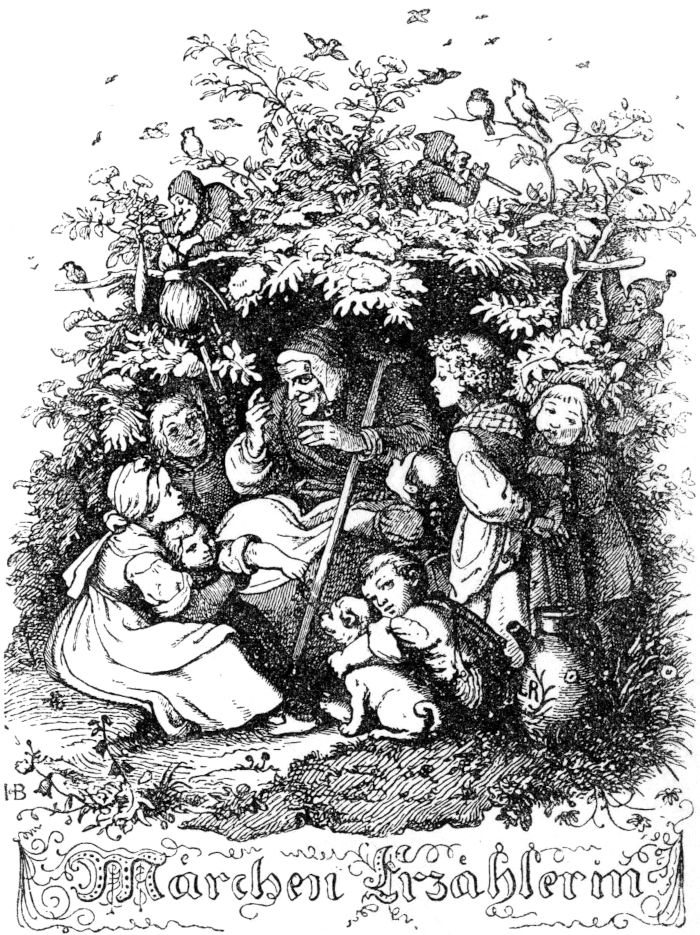
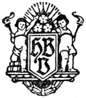

Das Umschlagbild wurde vom Bearbeiter geschaffen. Ein Urheberrecht wird nicht geltend gemacht. Das Bild darf von jedermann unbeschränkt genutzt werden.
1

3
Ludwig Bechsteins
Märchenbuch
Mit 176 Holzschnitten
nach Originalzeichnungen
von
Ludwig Richter

Hesse & Becker Verlag, Leipzig
- The Brave Little Tailor (Vom tapfern Schneiderlein)
- The Seven Swabians (Das Märchen von den sieben Schwaben)
- The Swabian who ate the liver (Vom Schwaben, der das Leberlein gefressen)
- The master thief's specimens (Die Probestücke des Meisterdiebes)
- The Enchanted Princess (Die verzauberte Prinzessin)
- The devil is loose (Der Teufel ist los) - the fairy tale how the devil invented brandy
- The blacksmith from Jüterbogk (Der Schmied von Jüterbogk)
- From roast anger (Vom Zornbraten)
- Hansel and Gretel (Hänsel und Gretel)
- Little Red Riding Hood (Das Rotkäppchen)
- The partridge (Das Rebhuhn)
- The Goldmaria and the Pechmaria (Die Goldmaria und die Pechmaria)
- Millet thief (Hirsedieb)
- The golden roebuck (Der goldne Rehbock)
- The nut branch (Das Nußzweiglein)
- The old wizard and his children (Der alte Zauberer und seine Kinder)
- The Grim Reaper (Gevatter Tod)
- The man without a heart (Der Mann ohne Herz)
- Star and bathtub (Star und Badewännlein)
- The two round millers (Die beiden kugelrunden Müller)
- The judge and the devil (Der Richter und der Teufel)
- Happy Hans (Hans im Glücke)
- The three feathers (Die drei Federn)
- The seven Ravens (Die sieben Raben)
- The teardrop jug (Das Tränenkrüglein)
- The beautiful young bride (Die schöne junge Braut)
- The ears of corn (Die Kornähren)
- From the chickens and chickens (Vom Hühnchen und Hähnchen)
- The three wedding guests (Die drei Hochzeitsgäste)
- The hare and the fox (Der Hase und der Fuchs)
- God everywhere (Gott Überall)
- The courageous flute player (Der beherzte Flötenspieler)
- The hare keeper (Der Hasenhüter)
- The fairy tale of the man in the moon (Das Märchen vom Mann im Monde)
- The king in the bath (Der König im Bade)
- Little Thumbnail (Der kleine Däumling)
- The magic contest (Der Zauberwettkampf)
- Man and woman in a vinegar jug (Mann und Frau im Essigkrug)
- The kitten and the knitting needles (Das Kätzchen und die Stricknadeln)
- The race between the hare and the hedgehog (Der Wettlauf zwischen dem Hasen und dem Igel)
- Oda and the snake (Oda und die Schlange)
- The three gifts (Die drei Gaben)
- Set the table, donkey stretch out, stick out of the sack (Tischlein deck dich, Esel streck dich, Knüppel aus dem Sack)
- The three musicians (Die drei Musikanten)
- The miller and the mermaid (Der Müller und die Nixe)
- Golden (Goldener)
- Seven beautiful (Siebenschön)
- The king's cathedral (Des Königs Münster)
- The little shepherd's dream of happiness (Des kleinen Hirten Glückstraum)
- The dog's distress (Des Hundes Not)
- The fairy tale of the land of milk and honey (Das Märchen vom Schlaraffenland)
- The witch and the royal children (Die Hexe und die Königskinder)
- The monk and the bird (Der Mönch und das Vögelein)
- The seven little kids (Die sieben Geißlein)
- Snow white (Schneeweißchen)
- The Sleeping Beauty (Das Dornröschen)
- The seven swans (Die sieben Schwanen)
- The three dogs (Die drei Hunde)
- Swan, stick on! (Schwan, kleb an!)
- The little mouse Sambar, or the faithful friendship of animals (Das Mäuslein Sambar, oder die treue Freundschaft der Tiere)
- The man and the snake (Der Mann und die Schlange)
- The rooster and the fox (Der Hahn und der Fuchs)
- The life story of the mouse Sambar (Die Lebensgeschichte der Maus Sambar)
- Trembling rabbit (Zitterinchen)
- Cinderella (Aschenbrödel)
- The boys with the golden stars (Die Knaben mit den goldnen Sternlein)
- The juniper tree (Der Wacholderbaum)
- The white wolf (Der weiße Wolf)
- Brother Saver and Brother Vertuer (Bruder Sparer und Bruder Vertuer)
- Rupert the bearskin (Rupert, der Bärenhäuter)
- The fairy tale of the knight Bluebeard (Das Märchen vom Ritter Blaubart)
- Golden chicken (Goldhähnchen)
- The three stupid devils (Die drei dummen Teufel)
- The thankful animals (Die dankbaren Tiere)
- The four clever fellows (Die vier klugen Gesellen)
- Vogel Holgott and Vogel Mosam (Vogel Holgott und Vogel Mosam)
- From two monkeys (Von zwei Affen)
- About the wolf and the mouse dogs (Von dem Wolf und den Maushunden)
- The cat and the mouse (Die Katze und die Maus)
- The shudder (Das Gruseln)